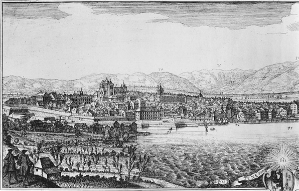
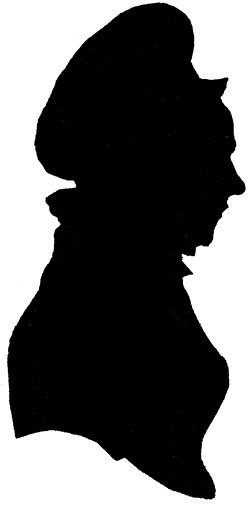
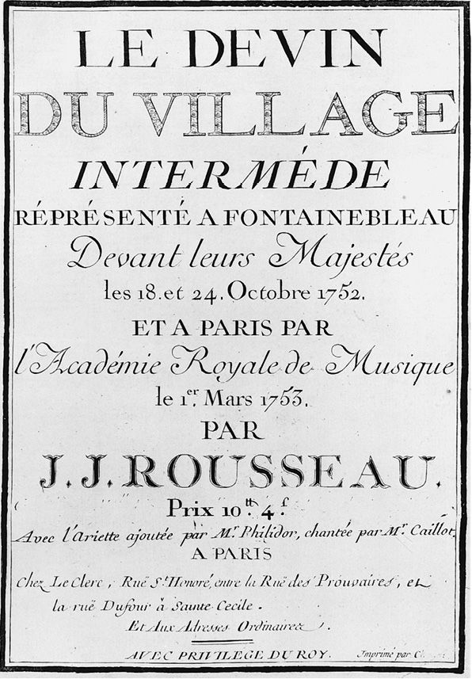
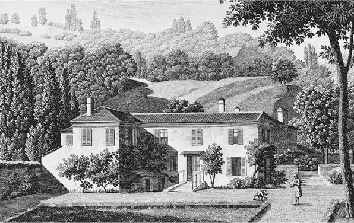
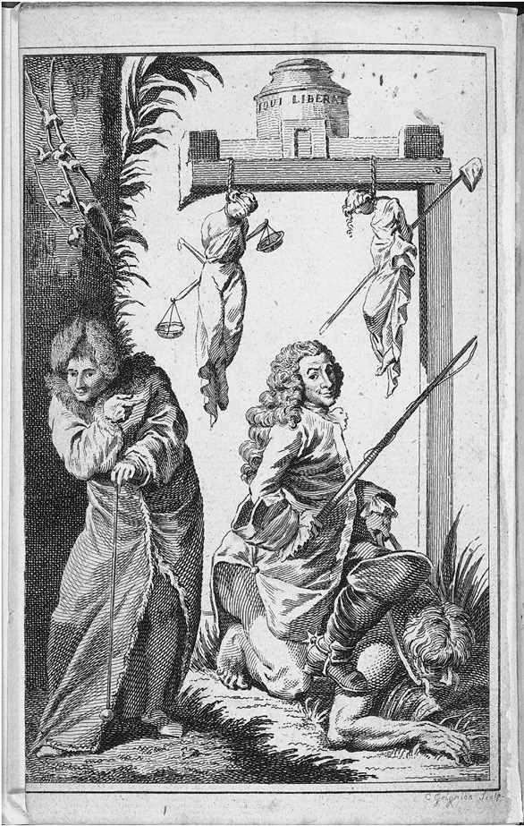
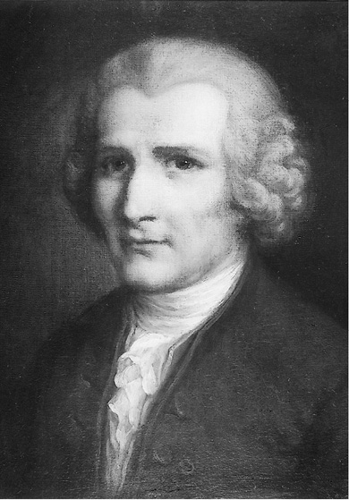

在同期的思想家中，卢梭与孟德斯鸠、休谟、斯密、康德对现代欧洲思想史产生了最为深远的影响。而卢梭所做出的贡献甚至可能超过同时代的其他所有人。没有哪位18世纪的思想家能像他这样写出如此多的著作，涵盖如此广泛的主题和形式，充满如此持久的激情和强大的说服力。没人能像他一样用自己的作品及一生如此深刻地激发甚至震撼了公众的想象力。在启蒙运动的重要人物当中，几乎只有卢梭能让当时所处世界的主要思潮经历最具启发性的批判，即便是在他引导思潮方向的时候也是如此。后来，当法国大革命的领袖们抓住机会引发政治实践和理论的统一时，他们首先宣布了对卢梭学说的拥戴。
和那个时代文学界的绝大多数杰出人士一样，除了政治之外，卢梭还有很多其他兴趣。他是一位广受赞誉的作曲家，他著有一部权威、翔实的音乐辞典。在他的一生中，音乐或许是他最感兴趣的主题。虽然他早期的许多重要作品都是关于艺术、科学和历史哲学的，但他在晚年却对植物学充满热情，他就植物学写了一系列书信，其译本成为英国深受欢迎的教科书。他的《一个孤独漫步者的遐想》在18世纪晚期的欧洲引发了浪漫自然主义思潮，他的《新爱洛伊丝》是那个时代最广为阅读的小说，他的《忏悔录》是自圣奥古斯丁以来最具影响力的自传作品，他的《爱弥儿》是自柏拉图《理想国》之后关于教育的最重要著作。然而，他所获得的最杰出的荣誉仍然来自道德和政治思想领域。
他的出生地和早期童年生活对他后来的生活和思想产生了深远的影响。他于1712年出生于日内瓦，一个加尔文主义小国，周边围绕着以信奉天主教为主的大国。这是一个多山的国家，有防御外敌入侵的自然屏障。最重要的是，它是共和制国家，而其周边的国家都是公爵领地制和君主制。卢梭后来在《爱弥儿》中描述萨瓦神父的时候，称他信仰的是仁慈的自然之神，而不是《圣经》。在一座鸟瞰城市的山丘上，他构思了一个人与其造物主直接沟通的景象，而他所了解的其他城市里的居民是无法对这一想法表示赞同的。在反对专制政府和腐败贵族特权的过程中，许多18世纪的启蒙思想家将开明君主视为改革过程中的盟友。但是，卢梭和同时代的启蒙思想家 不同，他对于开明专制的前景并不抱有太大信心。然而，出于对书刊审查制度的恐惧，狄德罗、伏尔泰等其他人在自己积极投身的事业上表现得相对缓和，他们开始以匿名的方式发表自己的作品。而卢梭会抓住每一个可能的机会在自己的作品上署名“日内瓦公民”，直到他确信自己的同胞们已经无可救药地彻底迷失后，他才停止这么做。启蒙运动中没有哪个重要人物能像他这样，如此敌视政治文明发展路线，而又为自己的政治身份感到如此骄傲。
卢梭的母亲生下卢梭后便撒手人寰，因此，养育卢梭的重任落在他父亲的身上。卢梭的父亲是一个富有浪漫气质但脾气暴躁的钟表匠，他激发了卢梭对自然和书籍的热爱，尤其是对经典名著和历史的热爱。卢梭从来没有接受过正规教育，似乎为了弥补这一不足，他偶尔会用冗长的脚注来注释他作品中所引用的文献，而他同期受过良好教育的作家几乎很少费心引经据典。不过，卢梭的母亲继承了大量藏书，他博览群书的父亲以颇具修养的方式鼓励少年卢梭，因而使他迷恋上了文学。后来，卢梭在《忏悔录》中提到这种修养，他认为这是日内瓦工匠区别于其他国家工匠的独特之处。卢梭对出生地的挚爱很大程度上也沿袭自他的父亲，他父亲告诉他“四海之内皆兄弟”，以及“喜悦和天堂支配一切”。至少有两本卢梭的重要作品——1758年的《致达朗贝尔论戏剧的信》和1764年的《山中来信》主要讲述了他出生城市的文化或政治体系。他还曾经评论自己所写的《社会契约论》描述的是自己国家的崇高原则。在卢梭的所有作品中，没有哪本像《致达朗贝尔论戏剧的信》这样详尽描绘他的政治友爱观。他在书中回忆了一个日内瓦兵团在露天举办欢庆活动，这激发了当时还是孩子的卢梭的想象力（《作品全集》第五卷，第123—124页；《致达朗贝尔论戏剧的信》，第135—136页）。

图1 1720年左右日内瓦的景色，罗伯特·加德勒绘
然而，卢梭对自己的父亲以及出生地的眷恋并没能让他克服失去母亲的痛苦。在他年仅十五岁时，经介绍认识了一位瑞士男爵夫人——华伦夫人，她住在萨沃伊公爵领地的阿讷西，位于日内瓦的西边。二十九岁的年轻的华伦夫人已经从事使新教难民改宗天主教的事业。她热情地把卢梭带进了她的家以及她的怀抱，而华伦夫人的这种热情恰巧与卢梭的狂热不谋而合。在接下来的十年内，他成了她的情人，也是她的学生。他们先后住在阿讷西、尚贝里，最后住在田园诗般宁静的谢尔梅特山谷。在她的指导以及她的资助者和告解神父的帮助下，卢梭完成了自己的学业，尤其是他之前知之甚少的哲学和当代文学，并由此开始考虑将写作作为自己的职业。此外，卢梭在一定程度上受华伦夫人敬虔主义热情激发，对神及其创造的奇迹产生了依恋，从而导致他的宗教信仰有别于同时代大多数启蒙思想家 ，他们或者是无神论者，或者是怀疑论者，但都对卢梭的狂热表示质疑，认为这和他们想要推翻的教会是属于同一类型的神秘迷信。在卢梭和华伦夫人成为情人的这段时期以及之后的岁月里，卢梭都称呼华伦夫人为妈妈 ，因为华伦夫人拥有甜美、优雅、美丽的特质，而这些特质是失去母亲的孩子渴望在之后所有令其着迷的女性身上找到的。
卢梭大约从1745年起直至去世，一直和泰蕾兹·勒瓦瑟生活在一起并与其结婚。泰蕾兹·勒瓦瑟并没有那么迷人，而且受教育程度也较低。虽然泰蕾兹·勒瓦瑟的清纯一开始吸引了卢梭，但她始终未能从卢梭那里获得他给予华伦夫人那样的深情。他从他生命中最为重要的两位女性那里获得母性关爱和性满足，但他永远无法容忍拥有自己的家庭。他抛弃了和泰蕾兹生的五个孩子，把他们送进公立育婴堂，命运未卜。卢梭后来声称自己太穷了，没法妥善地照顾自己的孩子，他对孩子的所作所为让他非常悔恨和羞耻。读者们肯定非常想知道他是如何写出像《爱弥儿》这样关于儿童教育的崇高论文的。《爱弥儿》在某些方面或许可以被解读为一部关于个人救赎的作品。直到今天，他抛弃自己孩子的行为比他的其他任何特点都更为影响他在大众心中的形象。
事实证明，卢梭也没有像关心华伦夫人那样关心泰蕾兹的需要。在1750年代，泰蕾兹陷入了极度的经济困境，甚至被迫登记为贫民。1762年夏天，在她即将离开人世的时候，她依然没有摆脱贫困，也没有跟卢梭联系。而那时，卢梭正由于自己的作品而被法国和瑞士的宗教和世俗统治者谴责，陷于对自身安危的焦虑中。在1778年4月12日圣枝主日，也就是卢梭去世的几周前，他写下了人生中最动人的篇章之一——《一个孤独漫步者的遐想》中的漫步之十。在这一章中，他回想自己初次遇见华伦夫人已经是五十年前了，他们彼此的命运已经交织在一起，在她的怀抱里他享受到了孤独人生中一段短暂而温柔的时光，没有艰难困苦、没有纷繁杂乱的情绪，因为这段时光，（他）才认为（他自己）真正活过（《作品全集》第一卷，第1098—1099页；《一个孤独漫步者的遐想》，第153页）。

图2 泰蕾兹·勒瓦瑟的剪影
在卢梭二十多岁的时候，他终于开始在世界上拥有一席之地，当时他主要依靠给人补习和谱写乐曲维持生计。他下决心要用一部喜剧——《纳西塞斯》和一套全新的乐谱体系征服巴黎。1742年到达巴黎后不久，卢梭结识了狄德罗。狄德罗与卢梭年龄相仿，背景相近，拥有相似的抱负，从而成为卢梭接下来十五年内最亲密的伙伴。他们两人的性情并不一样，狄德罗更为儒雅、和蔼，卢梭更为敏感、真挚，但他们在戏剧、科学尤其是音乐上拥有共同的兴趣。在狄德罗与达朗贝尔担任《百科全书》联合主编时，卢梭接受委托，撰写了大部分关于音乐的文章以及一篇关于政治经济学的文章。在1749年《论盲人书简》出版后，狄德罗在万塞讷的监狱被短暂拘留了一段时间。卢梭几乎每天都来探望他，并恳求当局释放他的伙伴。有一天，他从巴黎的寓所出发前往监狱的途中，偶然发现了一则关于有奖征文的竞赛通知，主题为艺术和科学及其对人类道德的影响，从此改变了他的人生轨迹。卢梭热衷于反对文明，这一观点构成了《论科学与艺术》的核心内容。狄德罗起初跟卢梭拥有同样的热情，但仅仅是因为他主编的艺术与科学辞典的主要撰稿人也试图不断地质疑科学和艺术，这一具有煽动性的想法让狄德罗非常感兴趣。后来，狄德罗开始拥护自己激进的道德观念，其中很多观念仍然和卢梭有着惊人的相似之处，尽管他一直对卢梭持否定态度的一个观点坚信不疑：知识和文化的演变只要源于符合人类天性的真正好奇心，就会带来人类行为的进步。
1743—1744年间，卢梭被任命为法国驻威尼斯大使，因而他暂时结束了在巴黎的逗留。年轻的时候，卢梭拜访过都灵，并在那里学习了意大利语。他喜爱意大利音乐，经常聆听，并对其自然和直接的表现方式表达出强烈的热情；他在欣赏结构精致的法国音乐时，也丝毫无法减淡对意大利音乐的热情。在都灵，他发现为弥撒仪式伴奏的华丽的管弦乐表演比在日内瓦教堂里被当作音乐的简朴的赞美诗更具有吸引力；在威尼斯，他也热衷于通俗音乐和本地音乐，街上和酒馆里的流行曲调一点都不比舞台上的音乐逊色，同样令他陶醉。他返回巴黎后，将意大利歌剧和法国歌剧进行比较，认为意大利歌剧更胜一筹。他认为法语欠缺音乐表现力，法国声乐风格通常缺乏清晰的旋律线，而且过多的表面装饰和和声的点缀导致音乐拖沓。
卢梭在18世纪中叶与当时著名的作曲家、音乐理论家拉莫的争执正是源于这样的主题。1753年，卢梭写了《论法国音乐的通信》，事实证明这是他引发争议最大的作品，因为这部作品，他对音乐的思考被视为具有煽动性，他的肖像被反对者吊起来以泄愤。卢梭自己在《忏悔录》（《作品全集》第一卷，第384页；《忏悔录》，第358页）中声称，《论法国音乐的通信》也是唯一一部曾经遏制了法国政治暴动的作品。1753年11月，君主一派对巴黎最高法院的地方法官进行驱逐，这一全国性的危机也激化了詹森主义者和耶稣会会士之间的矛盾，造成了极大的动乱。但卢梭坚持认为，这并不是他的作品所激发的，他的作品只是将一场原本针对国家的潜在革命，转变成了一场针对他的革命。矛盾的是，事实证明，《论法国音乐的通信》是卢梭唯一一部赢得启蒙思想家 普遍认可的作品，他们也怀着和卢梭相似的热情加入了推行意大利音乐的行列。1752年卢梭创作了歌剧《乡村卜者》，这部作品以意大利音乐风格创作，受到了广泛的称赞，甚至被格鲁克和莫扎特模仿并超越。1767年卢梭的《音乐辞典》出版，其中大部分内容都源自他为《百科全书》撰写的文章，他对于自己早先关于音乐和话剧的想法进行了更加深入的阐述。而在1760年代早期完成的《论语言的起源》中，卢梭在上述想法中加入了他的历史哲学思想，认为古典拉丁语比当代法语更具有音乐活力，古代共和国的公民拥有更多的美德和自由，他们以开放式的音乐表达了他们兄弟般的情谊，而这种音乐在君主统治的当代主题中已经不再流行了。
在卢梭的《忏悔录》中，他提到他在威尼斯发现“一切都归源于政治”，因此“一个民族的面貌完全是由其政府的性质所决定的”（《作品全集》第一卷，第404页；《忏悔录》，第377页）。他坚信，人天生并不邪恶，但往往由于差劲的政府滋生了邪恶，从而导致人变得邪恶。如果一切都取决于政治，那么日内瓦同胞的正直品格，以及曾经辉煌的威尼斯共和国民众的道德败坏，都可以追溯到同一个根源。在威尼斯居住过一段时间后，卢梭回到当时最大的君主国的首都巴黎，因此他可以比较三个截然不同的政体在塑造其民族性格上所产生的影响。卢梭在1749年起草了《论科学与艺术》，这让他第一次有机会集中阐述了他关于文化衰落和罪恶的政治根源的观点。他在书中提出，虽然我们的祖先是强健的，但启蒙运动带来的过度奢侈耗尽了我们的活力，使我们受制于文化的桎梏。斯巴达因为摆脱了艺术和科学的粉饰而成为一个持久的强国；雅典，这个代表古代最高文明的国家，却无法阻止自己的衰落，沦落为专制统治的国家，而罗马以及其他帝国的日益强大，都同时伴随着军事和政治实力的衰减。卢梭评论称，无论在何处，“艺术、文学、科学都把花冠点缀在束缚着人们的枷锁之上”（《作品全集》第三卷，第7页；《〈论文〉及其他早期政治著作》，第6页）。他之后的作品虽然囊括了很多其他主题，但他的“知识 源于感觉经验 ”这一观点此后成了其哲学理论的基石。受古代智者学派的启发，并由马克思和尼采重新修改，这一原则也成了后现代主义批判启蒙时代的普遍核心思想。

图3 《乡村卜者》的雕刻版扉页（巴黎，1753年）
卢梭的“一论” [3] 在他所参加的文学竞赛中获奖。几乎一夜之间，这部作品所引发的争论使他从一个即将步入中年、默默无闻的文人变成了现代文明中最饱受鞭挞的名人。导致这部作品臭名昭著的一个主要原因是，它颠覆了18世纪人们对于美德与丑恶之间史诗般斗争的普遍观点。伏尔泰在其《哲学通信》及其他作品中，代表他那个时代许多支持启蒙思想的人们发表了看法，他认为学习和科学的发展能够带来美德，并描绘了在现代欧洲从数百年迷信和无知的黑暗中慢慢觉醒的过程中，人类行为的逐步改善。狄德罗与达朗贝尔在构思《百科全书》时，基本遵循了同样的思路。相比之下，卢梭似乎在颂扬原始黄金时代的价值，从那个时代往后，人们由于盲目崇拜知识的欲望而堕落，并丢失了优雅。他不仅给人以推崇原始、反对文化的印象，而且在那些跟他同时代的文明进步人士看来，他似乎忘记了基督教会作为当代世界人们痛苦和绝望的主要来源，也是由于古代世界的无知而强化了他所推崇的神秘主义，并因此具备了影响力。伏尔泰及其追随者谴责了这种对人类未经教化的无知的幻念，他们指责卢梭放弃了他本应该坚持的政治和宗教改革事业，却回到粗野的愚蠢状态。虽然对卢梭所提出的人性本质理论的评价在很多方面都相当离谱，但对他的哲学的核心原则之一给予了应有的重视，而卢梭也经常说这一原则是他的很多作品的指导线索——虽然人类的造物主创造了一切美好的事物，但人类却造就了腐朽和堕落。卢梭认为，邪恶是人类社会的独特产物，虽然人类并非总是刻意为之。
在1750年代早期，卢梭主要专注于关于音乐的写作，并应对一些批评家对其《论科学与艺术》的反对。这些批评家将他的注意力从文化的堕落转移到政治和经济因素的不利影响上，他应该感谢这些批评家，因为在卢梭看来，是他们重申了他在威尼斯所发现的真相。1753年秋，卢梭的历史哲学理论得到进一步演进，他提出，人类道德败坏的主要原因是对不平等的追求，而并非对奢侈的追求。他还指出，建立在私有财产制度上的权威关系是人类道德败坏的主要原因。卢梭在他1755年的《论不平等》中提出，一些人以牺牲他人为代价，公开授权侵占土地，这必然导致公民社会建立于欺诈和不公正之上。他是根据对人类历史的推测来阐述这一论点的，其中他也试图解释家庭和农业的社会起源，并阐述了私有财产的不平等分配对不同类型政府的起源所起到的作用。在卢梭对历史假想性的重建中，他对自己的政治和社会理论提出了几点重要的见解，而这些是他之前从未阐述过的。他首次强调，我们道德败坏的主要原因是私有财产制度，而并非对文化和知识的追求，并由此挑战他之前从格劳秀斯、霍布斯以及后来普芬多夫和洛克那里所理解的现代法学的基础。启蒙运动时期的其他思想家都没有像卢梭这样在他的“二论” [4] 中如此直接地与传统观点进行对峙。18世纪对人性早期观点的批判也未能像卢梭一样针对社会特征提出进化演变这样生动的设想。此外，在卢梭的这篇作品中，文明人身上原始性的抽象概念源于人类身体和道德特征之间的二分性。他坚持认为，道德并非源于人性，而是来自社会中人性的改变，人与人之间的自然差异原本微不足道，但这种人性改变却会带来显著不同的结果，从而让我们的生活发生彻底的变化。他在《论不平等》中指出，私有财产的建立非但没有表现出人类天性中潜在的最好的一面，反而扭曲了人性，并将人类对荣誉和公众尊重的追求变成了一种不光彩的、令人沮丧的竞争。事实上，他首次在文中提出的关于人类原始特征的假设性描述，认为野蛮人更接近于其他动物，而并非文明人。这让卢梭有机会去思考动物学的主题，以及我们与猿和其他灵长类动物之间的区别。他开始相信，人类不管怎么样都是自然界中唯一可以创造自己历史的物种，而人类对能力的滥用致使其在社会中比其他所有生物都活得更焦虑、更痛苦。
卢梭的“二论”在各个领域对欧洲思想的发展产生了深远的影响，但最初它对读者的影响却比不上《论科学与艺术》和《论法国音乐的通信》。对于之前与卢梭结盟的启蒙思想家 而言，这却证实并加深了他们的担忧——他的“一论”是其真挚信念的宣言，卢梭再也不能被视为启蒙运动或进步的盟友了。对于卢梭本人而言，显然他需要与他先前的一些朋友分道扬镳，他一直都对无神论者和怀疑论者感到不安。卢梭仅在公众面前才会略微收敛自己不合时宜的热情，毫无疑问，这种热情在一定程度上是受到华伦夫人的激发而产生的，他的一些巴黎朋友，甚至是狄德罗，感觉这是他自以为是和虚荣的表现。
1750年代中期，卢梭开始和他的同伴发生争吵，并声称他再也无法容忍他们的道德自满。起初，卢梭计划返回日内瓦，但后来他又改变了迁居的想法，主要是因为伏尔泰决定在日内瓦定居。在两次被关押进巴士底狱后，伏尔泰只想寻找一个避风港，以使自己可以更安全地追求自己的兴趣，他也想寻求一个比普鲁士国王腓特烈大帝的世界——一个刺刀比书籍更受推崇的地方——更宜居的环境。但是卢梭却在伏尔泰对其家乡的“侵占”中，觉察到了险恶的动机，他担心伏尔泰会把日内瓦同胞们的简朴转变为巴黎人的腐败。这样，当他回到自己的出生地，就会面对相同的致使其逃离法国的恶习。因此，他决定接受狄德罗的朋友德皮奈夫人的邀请，住进位于巴黎北部蒙特伦西森林中一座名为艾米特的乡村别墅，德皮奈夫人曾经在很短的一段时间内是卢梭的资助者和最亲密的知己，但是后来她成为所有熟知他的对手中最凶猛的一个。1756年4月9日住进艾米特以后，卢梭开始脱离几乎所有自1740年代早期以来一直与之结盟的启蒙思想 家 。很快，卢梭就和狄德罗发生了争吵，狄德罗在这期间写了一部戏剧——《自然之子》，在一定程度上探讨了孤独的负面影响，而这部作品在卢梭看来是一种个人的蔑视之举。1756年，伏尔泰创作了关于自然法和1755年里斯本地震的诗，并在诗中嘲笑盲目信仰上帝并接受一切都本该如此的愚蠢行为。卢梭以一篇名为《天命书简》的文章回应：上帝不应该为邪恶负责，伏尔泰所抱怨的人类苦难是由人类自己造成的。接着，伏尔泰又采用道德故事的形式对卢梭（以及莱布尼茨和蒲柏）进行了讽刺的回应，并将其命名为《老实人》（Candide ）。
事实上到1758年，卢梭已经断绝了与他以前伙伴的一切关系。在此一年前，达朗贝尔于日内瓦在《百科全书》第七卷写了一篇关于日内瓦的重要文章，他在文中提出了在那个城市建立剧院的理由，认为这将提升这个城市的文化底蕴，从而提升其公民的道德修养。卢梭认为，达朗贝尔在创作这篇文章时曾得到伏尔泰的协助。他就剧院这一话题，构思了《致达朗贝尔论戏剧的信》，以反驳篡夺他基本人权的人，并与达朗贝尔直接对峙。他谴责舞台艺术与友爱精神相悖，这种友爱精神曾经相当普遍，而现在需要在他的家乡重新弘扬。就像柏拉图选择在其正义之邦理想国中将荷马神话中迷人但虚假的女神驱逐出去一样，卢梭在《致达朗贝尔论戏剧的信》中，试图保护日内瓦，不让其沦陷于莫里哀那让人不易察觉的讽刺中。莫里哀可以使用低劣的把戏，把虔诚的正直改变为伪善的恶作剧，从而使卢梭的同胞们痴迷于带有狡诈意图的戏剧，进而削弱了这个国家公民特有的朴素和热情。

图4 德西雷继戈蒂埃之后雕刻的艾米特景色
也是在他飞离巴黎之后的那段时期，卢梭写出了《朱莉》，又名《新爱洛伊丝》的初稿，这是18世纪晚期法国最受欢迎的小说。这一以书信体写成的故事讲述了饱经挫折的爱情与责任发生冲突而产生的磨难，这在一定程度上受到了理查森和普雷沃的小说的启发，书中包含卢梭就浪漫的情感、温柔的性爱以及田园般的质朴的一些最为抒情的段落。如果说《老实人》在某种程度上是伏尔泰以小说的形式对卢梭《天命书简》的回应，那么《新爱洛伊丝》的序言可以被视为《忏悔录》的后记，而卢梭写《忏悔录》实则是针对伏尔泰。“伟大的城市需要戏剧，堕落的社会群体需要小说。”卢梭写道，“我见证了我所处时代的道德，并发表了这些信。真希望我能生活在不得不将这些信扔掉的世纪！”（《作品全集》第二卷，第5页；《新爱洛伊丝》，第3页）
同期，卢梭完成了他的作品《爱弥儿》，这部作品和《新爱洛伊丝》篇幅相当，而且两者间还存在一定的相关性，不仅仅因为《爱弥儿》也是一部小说。其开篇是对教育的论述，正文第一卷的开篇陈述了一个原则，卢梭在1750年代中期就提出了这一原则，并将其视为自己整体哲学思想的主要动力。“世间一切在我们的造物主手中诞生时，都是好的。当人类用双手对其进行塑造时，一切都衰败了。”（《作品全集》第四卷，第245页；《爱弥儿》，第37页）他认为《爱弥儿》的核心主题是尊崇自然而非艺术的教育计划。这样的教育计划允许孩子的冲动顺其自然地发展，而非被迫改变和过早地被干预，也非通过训诫、指令而使孩子受到外部的控制。卢梭在文中描述了遗传对于个体精神成长的影响，这同时也反映了他在“二论”中表达的进化论观点，即人类从野蛮到文明状态的转变。尽管《爱弥儿》描绘的大多是关于情感和性欲，而非理性和权威，但是，儿童在成长的过程中必须首先只依靠事物本身而非依靠别人，这一规则为人们提供了一个有别于过去的全然独特的教育前景，而过去的教育必将导致人类的衰败。在卢梭作品中，《爱弥儿》首先提出即便是在腐败的社会，个人也可以实现某种独立的形式。通过培养自力更生的能力，人们可以从社会的禁锢中解脱。从这个意义上说，该作品对于人类尚未实现的可能的发展前景展现出谨慎的乐观态度，卢梭在之前的作品中从未表现过这样的态度。毫无疑问，卢梭在语气上的巨大转变，一定程度上是因为受到自己成功摆脱巴黎社会束缚的启发。

图5 亨利·富泽利为自己的《论卢梭的著作与行为》所绘的卷首插图，描绘了卢梭直指伏尔泰，跨越人性，将正义和自由置于绞刑架上（伦敦，1767年）
然而，根据卢梭在《忏悔录》中的描述，他在新家中首先着手写作的是《社会契约论》，这是他在威尼斯的时候就已经开始构思的作品，并决心将其编纂成他最经典的作品。真正理解社会契约原则的最好方式应该是对比“二论”中所叙述的有害契约准则，这样的契约，在正确的解读下，会实现而不是破坏公民真正的自由，并赋予公民法律上的平等，而不是让公民屈从于他们的政治头领。卢梭宣称，自由和平等这两个原则应该成为每一个立法体系的主要目标，《社会契约论》中的大部分内容都用以解释为什么应该如此。将道德和政治与我们生活中自然和生理的方面区分开来以后，卢梭提出，不同形式的自由适合不同的人。如果没有政府，人自然是自由的，因为不受他人意志的约束，但这种自由仅仅是为了满足人天生的冲动，政治社会的建立要求我们放弃这种自由；只有在政治社会中，我们才能实现公民自由或道德自由，前者使我们依赖于整个社会，后者使我们服从于那些表达我们集体意志的法律。在《社会契约论》中，卢梭声称国家可以作为实现自由的工具，只要国家的所有公民都同时拥有主权，只有这样，才能真正称为民众自治。卢梭指出，只有当国家的每个公民都直接参与立法，他们才能共同监管那些试图滥用权力的人。尽管与他同时代的不少人，如孟德斯鸠和伏尔泰，都对英国宪法中所强化的自由主义原则表示赞赏，但卢梭却因此认为英国的议会制将人民的主权委托给他们的代表，这与维护选民的自由是冲突的。
在《社会契约论》出版后，卢梭于1765年起草了《科西嘉制宪意见书》，并在1771年前后撰写了一篇关于波兰政府的文章。这两次都是由于当地政权尚未完全建立，卢梭应当地杰出公民的邀请，担任他们的立法委员。如果当初科西嘉没有遭受入侵，波兰没有被分割，那么在18世纪晚期，我们可能会见证社会契约的原则如何运用于实际国家的宪法中。卢梭声称，应该运用社会契约的原则，寻求政治理论和实践的结合，后来法国大革命中他的崇拜者也持有相同的观点，尽管他们采取的方式并不相同。卢梭将自己的哲学思想与柏拉图和莫尔进行对比，并坚持认为，自己并没有提出任何不切实际的乌托邦理想。相反，他的《社会契约论》是为了阐明一个接近家庭概念的理论基础，尤其是日内瓦宪法，他相信，正是因为宪法被抛弃，才导致自己祖国现任当局对他的愤恨（《作品全集》第三卷，第810页）。这也是他第三部主要研究政治的著作——1764年所著的《山中来信》所阐述的核心论点之一。
然而，他的《社会契约论》的特别吸引人之处，却是书中关于公民宗教的倒数第二章，这部分在他一生中引起了最强烈的公众愤怒。在这一章中，卢梭强调了宗教和政治基础对于公民责任的重要性，公民基于这些，履行并热爱自己的职责，并将其视为一种爱国的信仰，从而将公民团结在一起，共同献身于一种全能、善良、宽容的神性。卢梭的这一观点，在一定程度上是受到他深爱的马基雅维里的启发，从而导致卢梭与当时宗教和政治体制以及许多主要评论家之间产生了冲突。对于那些企图改革旧制度 的启蒙思想家 而言，卢梭的宗教狂热似乎又一次背离了启蒙运动的思想，并且是在理性时代刚刚降临时，再次召唤盲目信仰。而另一方面，卢梭公开谴责基督教，他认为基督教最适合于残暴的政府，这一行为同时激怒了教会和政治当局。此外，在与《社会契约论》几乎同期发表的《爱弥儿》中，卢梭在“萨瓦神父的信仰告白”里针对与宗教相悖的自然哲学进行了最详尽和最雄辩的论述，这使那些当局更感不快。

图6 卢梭的画像，作者被归为格勒兹
此后，卢梭再也未能逃脱谴责。《爱弥儿》和《社会契约论》在巴黎被禁止或被没收，在日内瓦被烧毁。卢梭被迫逃离至另一座城市，而后又被逮捕。1762年，他发现自己成为在逃犯，与许多启蒙思想家 的无神论相比，他没想到自己的主张竟引发如此强烈的官方反应，并被视为真正的基督教徒的顾虑。同时，他也没想到自己的同胞未能成功地帮助自己。1763年5月，卢梭在绝望中放弃了日内瓦公民的身份，并在普鲁士腓特烈大帝管辖下的纳沙泰尔附近的莫蒂耶找寻到临时的避难所。此后，他仍然无家可归，常常不得不以隐姓埋名的方式出行，任凭那些保护他的人摆布，他有时怀疑这些人的真正目的是诱捕并诋毁他。其中一个保护者是大卫·休谟，他1766年1月亲自陪同卢梭到英格兰，并在那里居住将近18个月，其中大部分时间在斯塔福德郡的伍顿地区。那时，卢梭深深怀疑有个国际阴谋将要诋毁其人格，因此给自己带来了巨大的痛苦，同时给休谟带来了很多不安。至少从1760年代中期开始，卢梭就受到妄想症的折磨，而现实中真正的迫害令其妄想症益发严重。他在余生中一直确信，他之前的启蒙运动先锋伙伴狄德罗、达朗贝尔、霍尔巴赫和格林在伏尔泰以及那些一直憎恶自己的贵族朋友的协助下，与他的政治敌人结成了联盟，并构建了巨大的阴谋网以攻击他。卢梭回到法国后，决定不再出版自己的作品。他的情绪只有在一人独处时，在研究植物学时，以及与自然浪漫抒情的交流中才能寻得缓解，就像他最新出版的巨著《一个孤独漫步者的遐想》中描述的那样。这部作品被有些读者认为是卢梭最伟大的杰作，在他死后与《忏悔录》的第一卷一起被发表。1778年，卢梭来到位于巴黎北部的埃默农维尔，并再次接受保护，这次保护他的人是吉拉尔丹侯爵。那一年，卢梭死于中风，他的遗孀说“他只字未留”（《卢梭书信全集》，第8344页），并反驳了关于他自杀的毫无根据的说法。
尽管卢梭已经和主流启蒙思想家渐行渐远，但他在法国各地、日内瓦激进派圈子里，尤其是在思想开明的欧洲周边——意大利、苏格兰和德国仍然有许多热情的追随者，其中康德和歌德是他下一代或两代崇拜者中最为杰出的。在法国大革命期间，当卢梭的《忏悔录》手稿被呈交公会、他的遗体被隆重地运到巴黎时，他对18世纪人们的生活和思潮的影响到达了顶峰。在卢梭那个时代，没有任何人比他更清楚地表达了革命者对自由、平等和博爱原则的承诺，也没有任何人像他那样完全献身于人民主权的理想。人民主权在法国的实现标志着旧制度 的消亡。尤其在刚正不阿的罗伯斯庇尔的政治生涯中，包括他对圣职授予和教士神学的反对，他对爱国精神的推崇和对最高主宰的崇拜，以及其他许多方面，都可以找到他对卢梭学说最积极的实用性阐述。卢梭本人从来没有主张过革命，他认为政治起义比他们原本想要治愈的疾病还要恶劣，他认为政治几乎没有可能拯救人类。但他预见了欧洲即将到来的危机和革命时代的到来，并希望这场危机能够得以避免。卢梭死后十年，法国大革命开始了，尽管如此，许多领导人还是在卢梭的哲学炽焰的照耀下，起草了他们的计划和宪法。由于这种联系，卢梭被斥为整个18世纪最邪恶的思想家。法国大革命变质后，首先催生了雅各宾派恐怖统治，然后产生了波拿巴主义，根据他的批评者的说法，最终引发了现代极权主义的出现。